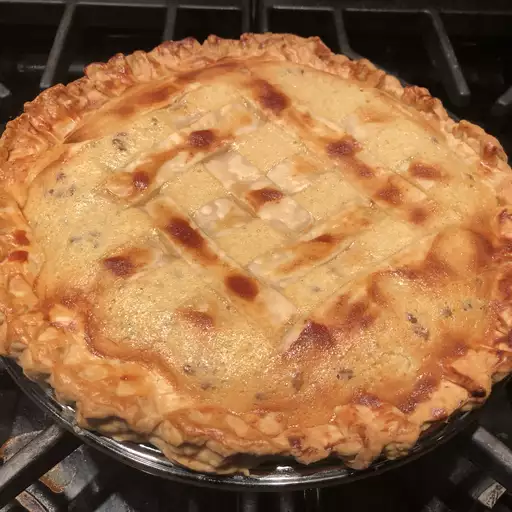

Easter Grain Pie

Ingredients
- 5 cups water
- ½ cup whole wheat berries
- 6 eggs
- 1 cup white sugar
- 1 ½ pounds ricotta cheese
- 1 (8 ounce) package mixed candied fruit
- 2 teaspoons grated orange zest
- 1 teaspoon grated lemon zest
- 1 teaspoon vanilla extract
- ½ teaspoon ground cinnamon
- 1 tablespoon unsalted butter
- 1 teaspoon salt
- 2 pastries for 9-inch lattice-top pies
- 2 tablespoons confectioners' sugar for dusting
Directions
- Bring water to a boil in a large saucepan over medium low heat; pour in wheat and boil for 40 minutes. As wheat is cooking, beat eggs in a large bowl while gradually adding 1 cup sugar to eggs. Mix in ricotta, candied fruit, orange zest, lemon zest, vanilla extract, and cinnamon.
- Meanwhile, beat eggs in a large bowl with an electric mixer while gradually adding in 1 cup sugar. Mix in ricotta, candied fruit, orange zest, lemon zest, vanilla extract, and cinnamon.
- When wheat is ready, drain in a colander and rinse with warm water. Place 3/4 cup of cooked wheat in a small bowl; stir in butter and salt until butter is melted, then stir wheat mixture into ricotta mixture along with remaining cooked wheat berries.
- Preheat the oven to 375 degrees F (190 degrees C).
- Line two 9-inch pie pans with pastry. Cut remaining pastry into 1/2-inch wide strips for tops of pies. Spoon 1/2 of the filling into each pan; cover with pastry strips to form a lattice pattern. Crimp edges.
- Bake in the preheated oven until crust is golden brown, about 45 minutes. Sprinkle each pie with 1 tablespoon sugar and allow to cool at room temperature. Chill overnight before serving.